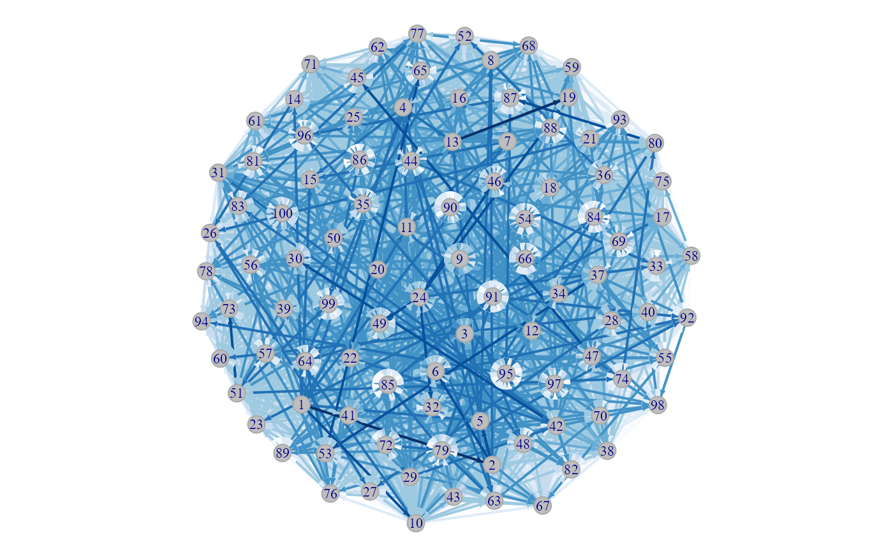

R/visualizeResults.R
nbNetwork.RdThe function nNetwork plots a network of the transmission probabilities.
The nodes are the individuals and the edges represent possible transmission pairs.
The darker the edge, the higher the probability that the pair is a transmission link.
If a cluster method is specified using clustMethod and cutoff, only edges
that are in the high probability cluster of infectors will be drawn.
nbNetwork( df, indIDVar, dateVar, pVar, clustMethod = c("none", "n", "kd", "hc_absolute", "hc_relative"), cutoff = NA, blackAndWhite = FALSE, probBreaks = c(-0.01, 0.001, 0.005, 0.01, 0.05, 0.1, 0.25, 0.5, 0.75, 1) )
| df | The name of the dateset with transmission probabilities (column |
|---|---|
| indIDVar | The name (in quotes) of the individual ID columns
(data frame |
| dateVar | The name (in quotes) of the columns with the dates that the individuals are
observed (data frame |
| pVar | The name (in quotes) of the column with transmission probabilities. |
| clustMethod | The method used to cluster the infectors; one of
|
| cutoff | The cutoff for clustering (see |
| blackAndWhite | A logical. If |
| probBreaks | A numeric vector containing between 3 and 10 elements specifying the boundaries used to classify the probabilities and color the edges. The first element should be less than 0 and the last should be 1. |
Users have the option of specifying how the probabilities should be grouped into different
color shades through the argument probBreaks. The probabilities are split into groups by
using probBreaks as the breaks argument in cut with the default options.
The length of the vector should be between 3 and 10 and the first element should be less than 0 and
the last 1 so that all probabilities are guarenteed to be classified.
The colors are defined with the code brewer.pal(length(probBreaks) - 1, "Blues")
(where "Blues" is replaced by "Greys" if blackAndWhite is set to TRUE).
# \donttest{ ## Network of all pairs in color with the default probability breaks par(mar = c(0, 0, 0.2, 0)) nbNetwork(nbResults, indIDVar = "individualID", dateVar = "infectionDate", pVar = "pScaled", clustMethod = "none")#> null device #> 1## Network of just the top cluster of infectors, black and white, changing the probability breaks par(mar = c(0, 0, 0.2, 0)) nbNetwork(nbResults, indIDVar = "individualID", dateVar = "infectionDate", pVar = "pScaled", clustMethod = "hc_absolute", cutoff = 0.05, blackAndWhite = TRUE, probBreaks = c(-0.01, 0.01, 0.1, 0.25, 0.5, 1)) dev.off()#> null device #> 1# }